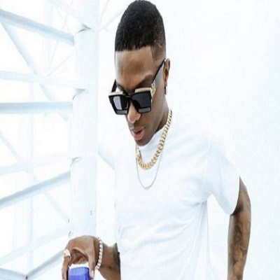
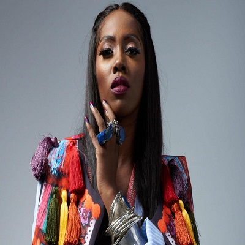

Listen to guest lecturer from diffrent aspect of the music
industry shearing their thoughts.
Lecture
Lecture
Listen to guest lecturer from diffrent aspect of the music
industry shearing their thoughts.
Lecture
Listen to guest lecturer from diffrent aspect of the music
industry shearing their thoughts.
Lecture
Listen to guest lecturer from diffrent aspect of the music
industry shearing their thoughts.
Featured Speakers

Michael Collins Ajereh
known professionally as Don Jazzy, is a Nigerian record producer, audio engineer, record executive, singer, songwriter, entrepreneur and philanthropist. He is the founder and the CEO of Mavin Records. Don Jazzy was co-owner of the defunct Mo' Hits Records record label with Dbanj.

Olamide Gbenga Adedeji
known professionally as Olamide is a Nigerian hip hop recording artist. He records in Yoruba and English. In 2011, he released his debut studio album Rapsodi while signed to Coded Tunes. YBNL, his follow-up album, was released under his label imprint YBNL Nation.

Michael Collins Ajereh
David Adedeji Adeleke, popularly known as Davido, is a Nigerian-American singer, songwriter, and record producer. Davido rose to fame after releasing "Dami Duro", the second single from his debut studio album Omo Baba Olowo. In 2012, Davido won the Next Rated award at The Headies

Ayodeji Ibrahim Balogun
known professionally as Wizkid is a Nigerian singer and songwriter. He began recording music at the age of 11 and released a collaborative album with the Glorious Five, a group he and a couple of his church friends formed.

Damini Ebunoluwa Ogulu
known professionally as Burna Boy, is a Nigerian singer, rapper and songwriter. He is one of the biggest and most successful African artists. He rose to prominence in 2012 after releasing "Like to Party", the lead single from his debut studio album L.I.F.E.

Tiwa Savage
A Nigerian singer, songwriter and actress. Born in Isale Eko, she relocated to London at the age of 11 for her secondary education. Five years later, she began her music career doing backup vocals for artists such as George Michael and Mary J. Blige
Ayodeji Ibrahim Balogun
known professionally as Wizkid is a Nigerian singer and songwriter. He began recording music at the age of 11 and released a collaborative album with the Glorious Five, a group he and a couple of his church friends formed.